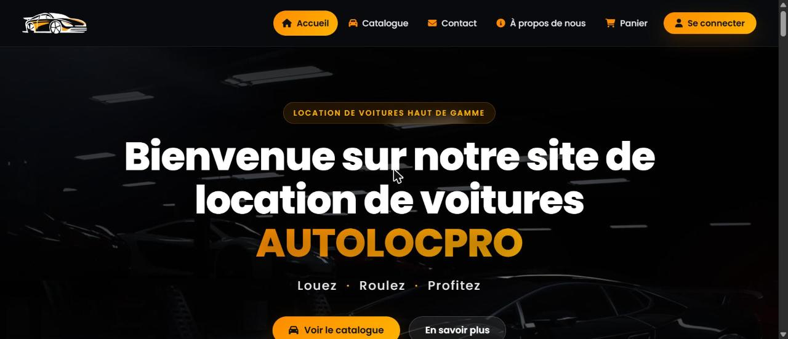
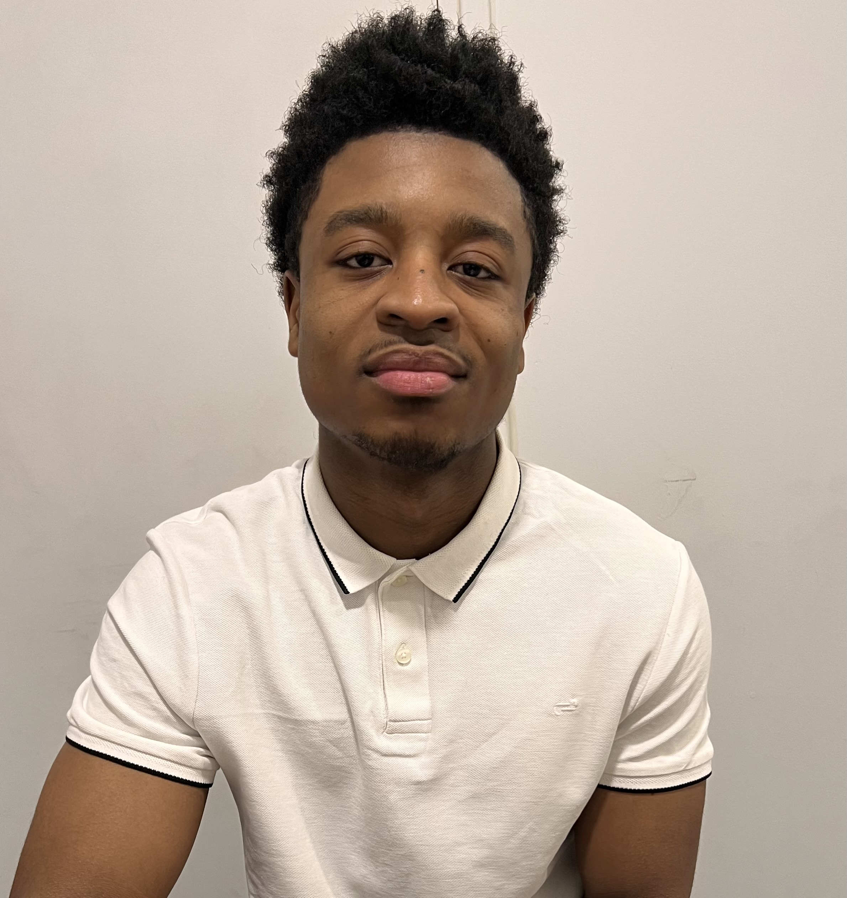

Je conçois des applications web et mobiles avec React, TypeScript, Node.js, PHP et C# – de l'architecture applicative jusqu'au dernier pixel, en passant par la data et la gestion de projet.


Développeur full-stack, je suis en Master Directeur de Projet en Conception et Développement de Solutions Informatiques (BAC+4) au CFA INSTA à Paris.
Après un BTS SIO (SLAM) et un Bachelor Développeur Web & Applications, je relie architecture applicative, data et gestion de projet. Je crois au Clean Code, à la sécurité dès la conception et à une expérience utilisateur soignée.
Chaque carrousel s'ouvre sur une visite animée de l'application, suivie de captures. Cliquez sur une vue pour l'agrandir.
Pilotage de projets informatiques, architecture de solutions et conduite d'équipes de développement. Premier projet : Ma Bibliothèque, mise en production sur Vercel.
Refonte du front-end du site officiel de l'école en composants réutilisables et responsive. Formulaire de gestion dynamique en PHP/MySQL avec chiffrement AES-256 des données sensibles. Mise en place d'un labo IA : LLM local (Mistral 7B) via Ollama et Docker, avec une interface de chat multi-utilisateurs en HTTPS. Formation de stagiaires en PHP, MySQL et JavaScript.
Développement web et applicatif, programmation orientée objet, bases de données, méthodes agiles. Projets en PHP, JavaScript, React et C#.
Le niveau que je m'attribue sur chaque outil, du frontend à la base de données.
Je cherche une alternance en Master. Si vous cherchez un développeur motivé, écrivez-moi.